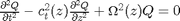
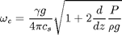
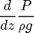

loadatmos; nsmoothsteps=4; loadcutoffdata; [nr,nc]=size(pres); plot(height(1420:nr),pres(1420:nr),height(1420:nr),pfit1); plot(height(1420:nr)./1e6,cutoff_chromos(height(1420:nr)),hc./1e6,cutoff,height(1324:1419)./1e6,cutoff_transition(height(1324:1419))); plot(height(1420:nr)./1e6,cutoff_chromos(height(1420:nr)),hc./1e6,cutoff,height(1324:1419)./1e6,cutoff_transition(height(1324:1419)),height(1:1325)./1e6,cutoff_corona(height(1:1325))); [pressmooth, rhosmooth]=smoothav(consts, pres, dens,nsmoothsteps); csav=sqrt(consts.fgamma.*pressmooth./rhosmooth); plot(height./1e6,csav./1e3); lam0=pressmooth./(rhosmooth.*consts.ggg); dh=height(1)-height(2); for j=1:nsmoothsteps lamdash0(nr+j)=lamdash0(nr); end for i=1:nr lamdash0(i)=-diff5p(lam0,i,h); if lamdash0(i)<-200: lamdash0(i)=-200 count=1 lamtot=0 for j=1:nsmoothsteps-1 sdashtot=sdashtot+lamdash0(i+j); end sdash0(i)=sdashtot/nsmoothsteps; for j in range(i,i+30): if j<=(asize/4)-30: lamtot=lamtot+lamdash0[j] count=count+1 lamtot=lamtot/count lamdash0[i]=lamtot cssmooth=cs(consts,pres,dens);
Error: File: C:\Users\mikeg\proj\gitclone\solar\pmode\cutoff\computecutoff.m Line: 44 Column: 25 Expression or statement is incomplete or incorrect.